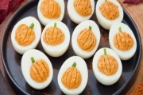

Необходимый компонент любого суфле (воздушного пирога) – хорошо взбитые белки. Перед взбиванием их надо охладить. Начинают взбивать медленно, постепенно увеличивая скорость. Объем белков в результате взбивания должен увеличиться в 4–6 раз. Взбитые белки следует использовать сразу же, чтобы они не оседали.
Суфле выпекают в духовке при температуре 180–200 °C 10–15 минут. Объем суфле при выпекании увеличивается в 2–2,5 раза, что следует учитывать, заполняя форму для выпечки.
Суфле яичное
Белки взбиваем с сахарной пудрой и ванильным сахаром, а желтки растираем с сахарной пудрой. Затем смеси соединяем и осторожно перемешиваем. Массу выкладываем на смазанную сливочным маслом сковороду и выпекаем.
Суфле можно посыпать сахарной пудрой.
Состав: 4 яйца
120 г сахарной пудры
30 г сливочного масла
ванильный сахар по вкусу
Суфле из яиц и сыра
Расплавляем в маленькой кастрюле сыр, добавляем желтки, молоко, муку, перец, тщательно перемешиваем. Взбиваем в густую пену белки и добавляем в смесь. Этой массой заполняем на / формочки, смазанные маслом, и запекаем.
Состав: 4 яйца
250 г сыра
200 г молока
30 г пшеничной муки
40 г сливочного масла
перец по вкусу
Суфле из бананов
Готовим пюре из очищенных сырых бананов, добавляем сахар и вводим взбитые белки. Массу кладем в форму, смазанную маслом, и запекаем.
При подаче посыпаем сахарной пудрой.
Состав: 10 яичных белков
200 г бананов
130 г сахарного песка
15 г сахарной пудры
10 г сливочного масла
Суфле из сушеных яблок
Сушеные яблоки тщательно промываем, варим до готовности, добавив в воду сахар, лимонную кислоту, и протираем вместе с отваром (отвара после варки должно остаться мало). Белки взбиваем в густую пену, осторожно соединяем с протертыми яблоками и запекаем при температуре не выше 160 °C.
Готовое суфле посыпаем сахарной пудрой.
Состав: 10 яичных белков
100 г сушеных яблок
120 г сахарного песка
10 г сливочного масла
15 г сахарной пудры
100 г воды
1 г лимонной кислоты
Суфле яблочное
Яблоки промываем, разрезаем пополам, удаляем сердцевину, выкладываем на противень, сбрызгиваем водой и запекаем в духовке при температуре 120–140 °C 20–30 минут.
Печеные яблоки охлаждаем и протираем через сито. В полученное яблочное пюре добавляем сахар и провариваем до загустения. Полученную массу соединяем со взбитыми белками, выкладываем на противень и запекаем.
Состав: 3 яичных белка
2 яблока
40 г сахара
20 г сливочного масла
5 г сахарной пудры
150 г молока или сливок
Суфле апельсиновое
Растапливаем сливочное масло, добавляем муку и, помешивая, прогреваем на огне, не доводя до кипения. Затем заливаем все теплым молоком, предварительно растворив в нем соль и сахар. В смесь добавляем нарезанную мелкой соломкой цедру апельсина и прогреваем до загустения 15–20 минут. После этого снимаем с огня, немного охлаждаем, осторожно вводим взбитые белки и апельсиновый сок и выпекаем.
Состав: 10 яичных белков
400 г апельсинов
170 г апельсинового сока
20 г апельсиновой цедры
150 г молока
40 г сливочного масла
50 г пшеничной муки
250 г сахарного песка
соль по вкусу
Лимонное суфле
Готовим желтую мучную пассеровку, провариваем с молоком, приправляем цедрой, вмешиваем постепенно желтки и разрыхляем взбитыми белками. Наполняем этой смесью смазанные маслом кокотницы, обильно посыпаем сахаром и запекаем суфле на водяной бане 40 минут.
К суфле подаем лимонный сок, прокипяченный с водой и сахаром.
Состав: 6 яичных желтков
100 г сливочного масла
100 г муки
/ л молока
цедра с 1–2 лимонов
6 белков для взбивания
сливочное масло для смазывания формочек
100 г сахара
лимонная заправка из сока 2 лимонов
/ л воды
80 г сахара
Суфле абрикосовое или сливовое
Абрикосы (сливы) моем, удаляем косточки, припускаем до готовности и протираем. Затем добавляем сахар, варим до загустения, соединяем со взбитыми белками и запекаем.
Состав: 10 яичных белков
200 г абрикосов или слив
130 г сахарного песка
10 г сливочного масла
15 г сахарной пудры
Суфле из груш
Груши промываем, нарезаем крупными дольками, припускаем до готовности и протираем. В грушевое пюре добавляем сахар и вводим взбитые белки. Массу выкладываем на порционную сковороду, смазанную маслом, и запекаем.
Состав: 10 яичных белков
200 г груш
130 г сахарного песка
10 г сливочного масла
Суфле миндальное
Желтки растираем с сахаром, добавляем муку и измельченный поджаренный миндаль. Смесь разводим горячим молоком и, непрерывно помешивая, провариваем до загустения, затем соединяем со взбитыми белками. Приготовленную массу выкладываем на порционную сковороду, смазанную маслом, и выпекаем в духовке.
Суфле посыпаем сахарной пудрой.
Состав: 10 яиц ванилин
230 г сахарного песка
45 г пшеничной муки
10 г сливочного масла
150 г миндаля
30 г сахарной пудры
200 г молока
Суфле из варенья
Густое варенье смешиваем со взбитыми в пену белками, выкладываем в форму, смазанную маслом, и запекаем.
При подаче суфле посыпаем сахарной пудрой.
Состав: 10 яичных белков
250 г варенья (малиновое, земляничное или другое)
10 г сливочного масла
20 г сахарной пудры
Суфле шоколадное
Шоколад натираем на крупной терке и соединяем с растертыми с сахаром желтками и мукой, после чего разводим горячим молоком и провариваем до загустения. Полученную массу смешиваем со взбитыми белками, укладываем в смазанную маслом форму и запекаем.
При подаче суфле посыпаем сахарной пудрой.
Состав: 10 яиц
200 г сахарного песка
120 г шоколада
240 г молока
50 г пшеничной муки
15 г сливочного масла
сахарная пудра
Суфле ванильное
В желтки, растертые с сахаром, кладем муку, ванильный сахар, перемешиваем, постепенно вливая холодное молоко. Затем смесь провариваем на слабом огне, не доводя до кипения. Полученную однородную массу соединяем при быстром помешивании со взбитыми белками, выкладываем горкой на смазанную маслом сковороду. Поверхность украшаем узорами из этой же массы, которую выпускаем из кондитерского мешка. Затем выпекаем в духовке 10–15 минут.
Состав: 2 яйца
30 г сахарного песка
10 г пшеничной муки
40 г молока
10 г сливочного масла
3 г сахарной пудры
0,2 г ванильного сахара
Суфле из крыжовника
Крыжовник промываем, провариваем до размягчения в небольшом количестве воды, добавив цедру лимона и сахар (/ нормы), протираем через сито. Желтки растираем с сахаром, соединяем с пюре и провариваем 3–5 минут, постоянно помешивая. Снимаем с огня и вводим взбитые белки. Полученную массу перекладываем в смазанную маслом форму и запекаем в жарочном шкафу.
Состав: 9 яиц
600 г крыжовника
250 г сахарного песка
10 г лимонной цедры
Суфле из земляники
Ягоды перебираем, промываем и протираем. Добавив в пюре сахар, варим до загустения, после чего, не охлаждая, соединяем со взбитыми белками. Порционную сковороду или форму смазываем сливочным маслом, приготовленную массу выкладываем горкой и запекаем в духовке.
При подаче посыпаем сахарной пудрой.
Состав: 10 яичных белков
130 г сахарного песка
150 г земляники
10 г сливочного масла
15 г сахарной цедры
Суфле из хлеба
Мякиш черствого хлеба нарезаем мелкими кубиками, заливаем молоком и оставляем на 30–40 минут, после чего смешиваем миксером в однородную массу. Желтки растираем с сахаром, смешиваем с тщательно промытым изюмом (без косточек). Белки взбиваем и вводим в смесь. Суфле выпекаем в смазанной маслом форме.
При подаче посыпаем сахарной пудрой.
Состав: 7 яиц
180 г пшеничного хлеба
250 г молока
30 г изюма
200 г сахарного песка
15 г сливочного масла
30 г сахарной цедры
Суфле из свежих грибов
Грибы (белые, подосиновики, подберезовики) варим в подсоленной воде, вынимаем из бульона и пропускаем через мясорубку.
Хлеб нарезаем на кусочки, заливаем горячим молоком, немного охлаждаем, добавляем растертые желтки, сметану и измельченные грибы. Затем вводим взбитые белки, добавляем муку и соль.
Все тщательно перемешиваем, выкладываем в форму, смазанную маслом, посыпаем тертым сыром, сбрызгиваем маслом и ставим в горячую духовку. Запекаем, пока не подрумянится.
Состав: 3 яйца
250 г свежих грибов
150 г пшеничного хлеба
180 г молока
10 г пшеничной муки
20 г сливочного масла
15 г сыра
75 г сметаны
соль по вкусу
Суфле из отварной рыбы
Рыбу разделываем на филе без кожи и костей, нарезаем кусочками и припускаем в воде до готовности. После этого рыбу пропускаем через мясорубку с частой решеткой, добавляем сливочное масло, желтки, молочный соус и все хорошо перемешиваем. Затем вводим взбитые яичные белки и осторожно перемешиваем. Готовую массу кладем в формочки, смазанные сливочным маслом, и припускаем на пару до готовности.
При подаче поливаем сливочным маслом. Молочный соус: муку разводим горячим молоком и варим 7–10 минут при слабом кипении.
Состав: 1 яйцо
250 г свежей рыбы
15 г сливочного масла
35 г молока
10 г пшеничной муки
Суфле из помидоров
Готовим из свежих помидоров пюре, добавляем тертый сыр, сливочное масло, густую сметану, сырые желтки, взбитые белки. Отвариваем макароны, откидываем на сито, заправляем маслом и тертым сыром. Смазываем форму для суфле маслом, кладем на дно слой пюре из помидоров, затем слой макарон, а сверху пюре. Отвариваем на пару или запекаем в духовке.
Состав: 2 яйца
180 г помидоров
40 г сыра
20 г сливочного масла
40 г сметаны
100 г макарон
Суфле из цветной капусты
Очищенную цветную капусту разделяем на отдельные соцветия, промываем, варим до готовности в кипящей подсоленной воде, затем откидываем на дуршлаг и протираем через сито.
В готовый молочный соус (см. выше) средней густоты, нагретый до 60–70 °C, вводим сырые желтки и перемешиваем. Полученную смесь соединяем с капустным пюре, добавляем взбитые яичные белки и осторожно перемешиваем сверху вниз. Готовую массу выкладываем в формочки, смазанные сливочным маслом, и припускаем до готовности.
При подаче поливаем сливочным маслом.
Состав: 1 яйцо
200 г цветной капусты
80 г молока
10 г пшеничной муки
20 г сливочного масла
Суфле из кабачков
Очищенные кабачки нарезаем и отвариваем в подсоленной воде, откидываем на дуршлаг, разминаем вилкой и полученное пюре слегка обжариваем в масле. Снимаем с огня, охлаждаем, потом вливаем молоко, добавляем сыр, молотые сухари, мелко нарезанную зелень петрушки, черный перец и взбитые в пену яйца. Массу размешиваем и выкладываем в посуду, смазанную маслом, поливаем маслом, запекаем в духовке.
Суфле подаем горячим.
Состав: 4 яйца
900 г кабачков
180 г молока
80 г молотых сухарей
10 г зелени петрушки
60 г сливочного масла
сыр, соль и перец по вкусу
Суфле ореховое
Ядра грецкого ореха обжариваем, удаляем поверхностную пленку и растираем. Готовим, как суфле ванильное, добавляя орехи при растирании желтков с сахаром.
Состав: 10 яиц
200 г сахарного песка
200 г молока
20 г пшеничной муки
100 г грецких орехов
20 г масла
15 г сахарной пудры
Суфле из сметаны
1-й вариант. Желтки растираем с сахаром, добавляем муку, сметану и, помешивая, варим 5–7 минут, после чего вводим лимонную цедру, все перемешиваем и соединяем со взбитыми белками. Суфле выпекаем в смазанной маслом форме. Готовое суфле посыпаем сахарной пудрой.
2-й вариант. Муку смешиваем со сметаной, кипятим, взбиваем миксером до получения однородной массы. Затем смесь охлаждаем, вводим в нее желток, сахар, лимонную цедру и взбитые белки. Все тщательно перемешиваем, укладываем в глубокую, смазанную маслом форму и запекаем.
Состав: 10 яиц
240 г сметаны
50 г пшеничной муки
200 г сахарного песка
30 г лимонной цедры
20 г сливочного масла
Суфле творожное
Творог протираем через сито, добавляем манную крупу, желтки, растертые с сахаром, молоко, ванильный сахар и все хорошо перемешиваем. В массу вводим взбитые белки. Формочку смазываем сливочным маслом, кладем в нее подготовленную массу и варим суфле на водяной бане.
При подаче поливаем сметаной.
Состав: 3 яйца
500 г творога
50 г манной крупы
20 г сахарного песка
100 г молока
20 г сливочного масла
ванильный сахар по вкусу
Суфле творожное с курагой и морковью
Морковь натираем на мелкой терке, курагу промываем и мелко рубим, творог протираем через сито. Смешиваем творог, морковь, курагу, манную крупу, желтки, растертые с сахаром, до получения однородной массы и вводим взбитые белки. Формочку смазываем маслом, кладем в нее подготовленные продукты. Суфле доводим до готовности на водяной бане.
Подаем со сметаной.
Состав: 3 яйца
500 г творога
50 г манной крупы
50 г моркови
50 г кураги
30 г сливочного масла
100 г сметаны
Безе яблочное
Яблоки без сердцевины печем, протираем через сито, смешиваем с сахарной пудрой и яичными белками и взбиваем на холоде в густую пышную массу. Противень застилаем чистой белой бумагой, выкладываем на него массу, сформованную в виде полушара с помощью ложки, и запекаем.
Состав: 10 яичных белков
700 г яблок
250 г сахарной пудры
Безе заварное
Варим густой сахарный сироп, слегка охлаждаем и постепенно вводим в него взбитые белки. Массу тщательно размешиваем. Ложкой формуем из подготовленной массы продолговатые лепешки, кладем на противень и выдерживаем 1–2 часа, после чего ставим в слегка разогретую духовку на 10–15 минут.
Готовые лепешки склеиваем вишневым сиропом.
Состав: 8 яичных белков
500 г сахарного песка
250 г воды
200 г вишневого сиропа
«Ласточкино гнездо»
Белки взбиваем, постепенно добавляя сахар. Рубим миндаль и добавляем к взбитым белкам. Массу при помощи кондитерского мешка выпускаем круговыми движениями на смазанный жиром противень так, чтобы получились лепешки, напоминающие по форме ласточкино гнездо. Выпекаем изделия на очень слабом огне.
Подаем в холодном виде.
Состав: 6 яичных белков
430 г сахарного песка
430 г миндаля
«Снежки» в ванильном соусе
Белки охлаждаем, взбиваем, добавляем сахарный песок, лимонную кислоту и хорошо размешиваем. Подготовленную белковую массу формуем ложкой в виде шариков и опускаем в кипящую воду. «Снежки» варим 3–5 минут. Готовые «снежки» раскладываем в порционную посуду и заливаем ванильным соусом.
Для соуса яичные желтки растираем с сахаром и соединяем с молоком. Слегка обжаренную пшеничную муку разводим небольшим количеством молока, тщательно размешивая, чтобы не было комков, и вводим в яично-молочную смесь, которую нагреваем до 80 °C, непрерывно помешивая. В соус добавляем ванильный сахар.
Состав: 8 яичных белков
100 г сахарного песка
0,2 г ванильного сахара
0,5 г лимонной кислоты
Для соуса: 4 яичных желтка
500 г молока
100 г сахарного песка
10 г пшеничной муки
0,2 г ванильного сахара